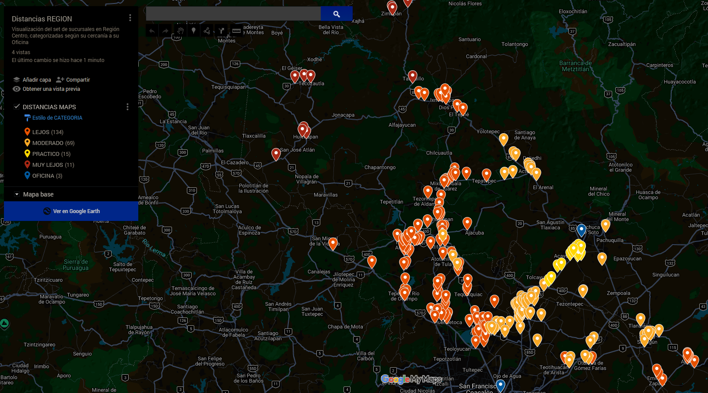
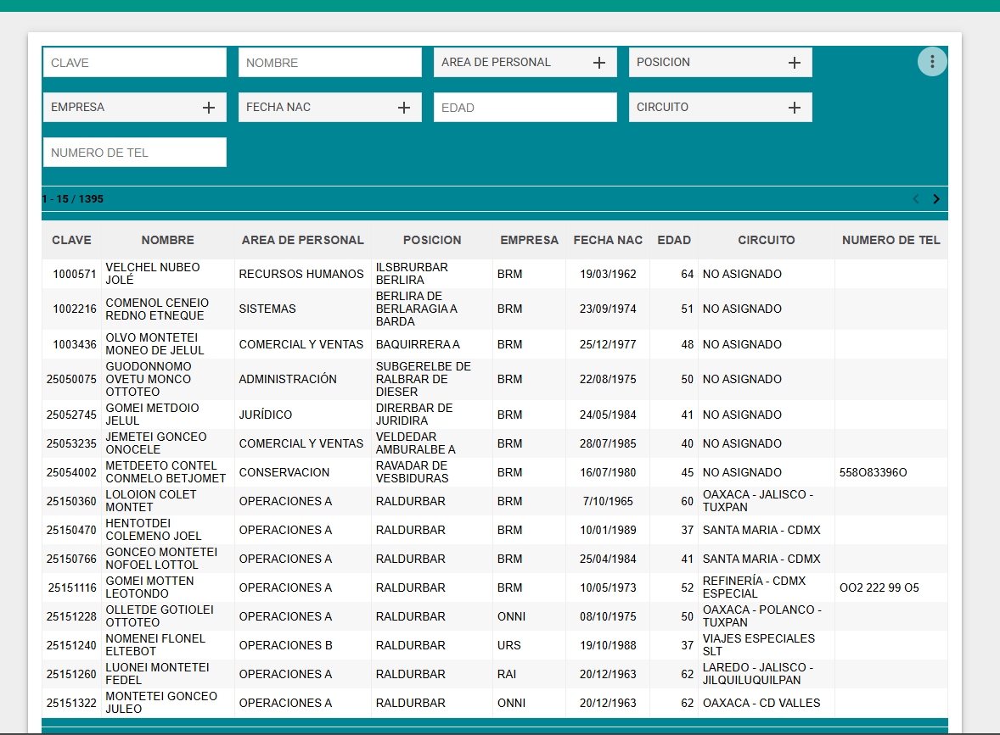
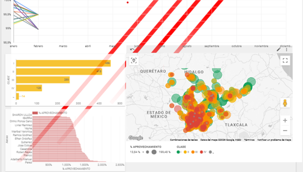
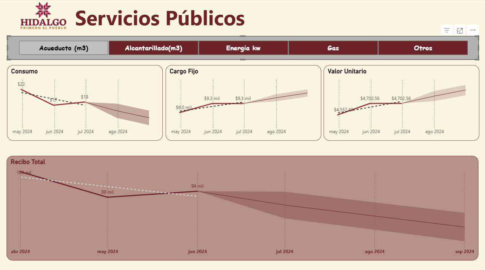

Médico General con 5 años de experiencia en salud ocupacional y seguridad industrial. Especializado en análisis de datos y automatización de indicadores aplicados a la gestión de la salud laboral.
Médico General con experiencia en administración de servicios médicos empresariales en los sectores de autotransporte de pasajeros y comercio al por menor. Especializado en cumplimiento normativo, gestión preventiva y en la automatización de reportes y visualización de indicadores.
Formación activa en Business Intelligence con ruta en Platzi, certificación Google Cloud y experiencia real en producción con Power BI, Looker Studio y Python.




Abierto a oportunidades para colaborar en área de Salud ocupacional, Seguridad Industrial y Análisis de datos en Hidalgo, México.